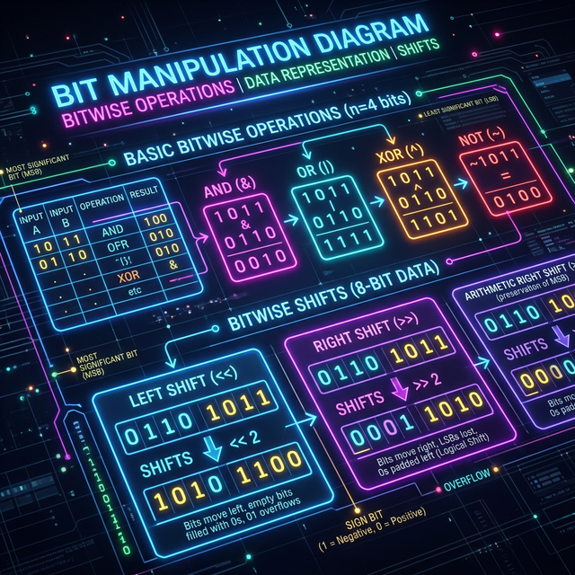

Bit Manipulation
# XOR — find single number
def singleNumber(nums):
r = 0
for n in nums: r ^= n # pairs cancel
return r
# count set bits (Brian Kernighan)
def countBits(n):
count = 0
while n:
n &= n-1 # drop lowest 1-bit
count += 1
return count
# check power of 2
def isPow2(n): return n>0 and (n & n-1)==0
Bit Manipulation
The Core Idea: Use bitwise operators (AND, OR, XOR, shifts) to perform operations extremely efficiently at the hardware level.
Operating directly on the binary representations of numbers. Essential for hyper-optimized state management, counting, or unique math tricks.
- "Number of 1 Bits" (Hamming Weight)
- "Find the number that appears once"
- "Missing Number" (using XOR)
Reasoning for Key Tricks
If you have pairs of matching numbers and one unique number, XORing every element
against a running total will cancel out all matches to 0. The final
total is your unique number.
The operation n = n & (n - 1) drops the least significant
1 bit in the binary representation of n. Calling this
repetitively counts exactly how many 1s there are.
x << 1 multiplies by 2. x >> 1
floor-divides by 2. This is extremely fast.
If you don't actually need ultimate performance optimizations and simple math or sets make the code far more readable. Usually, only use bits if the problem specifically demands O(1) space or bits manipulation logic.
The Universal Masterclass Template (XOR Unique)
def singleNumber(nums):
result = 0
for num in nums:
# XORing a number with itself results in 0.
# XORing with 0 results in the number.
# So all pairs cancel out, leaving only the unique element.
result ^= num
return result